BALSAS - PI
"Arte e sustentabilidade em cena: inspirando mudanças para um futuro melhor."

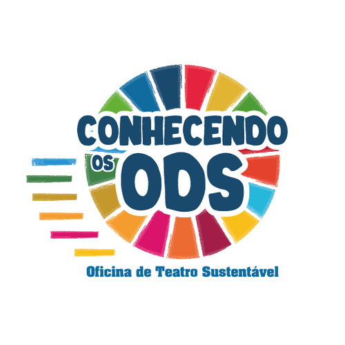
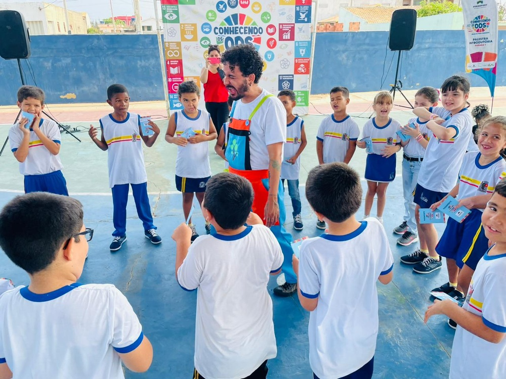
"Arte e sustentabilidade em cena: inspirando mudanças para um futuro melhor."
O projeto "Oficina de Teatro Sustentável" é uma iniciativa que integra o poder transformador das artes cênicas com a conscientização sobre os Objetivos de Desenvolvimento Sustentável (ODS). Através de oficinas de teatro, cada turma desenvolveu e encenou uma peça que explora um dos ODS, oferecendo uma experiência educativa e inspiradora tanto para os alunos quanto para a comunidade. Como parte do projeto, uma palestra intitulada "Como trabalhar os ODS através da cultura" foi oferecida a professores de escolas públicas, ampliando o alcance do impacto e incentivando novas formas de aprendizado.
Foram realizadas oficinas de artes cênicas para adolescentes da rede pública de ensino, com o objetivo de estimular a criatividade e o empreendedorismo criativo.
"Arte e sustentabilidade em cena: inspirando mudanças para um futuro melhor."
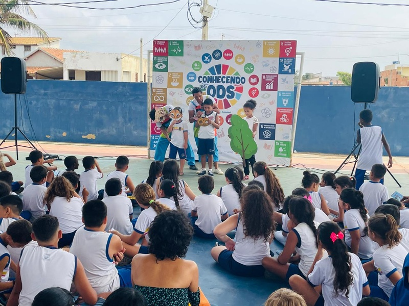
O projeto "Oficina de Teatro Sustentável" é uma iniciativa que integra o poder transformador das artes cênicas com a conscientização sobre os Objetivos de Desenvolvimento Sustentável (ODS). Através de oficinas de teatro, cada turma desenvolveu e encenou uma peça que explora um dos ODS, oferecendo uma experiência educativa e inspiradora tanto para os alunos quanto para a comunidade. Como parte do projeto, uma palestra intitulada "Como trabalhar os ODS através da cultura" foi oferecida a professores de escolas públicas, ampliando o alcance do impacto e incentivando novas formas de aprendizado.
Foram realizadas oficinas de artes cênicas para adolescentes da rede pública de ensino, com o objetivo de estimular a criatividade e o empreendedorismo criativo.
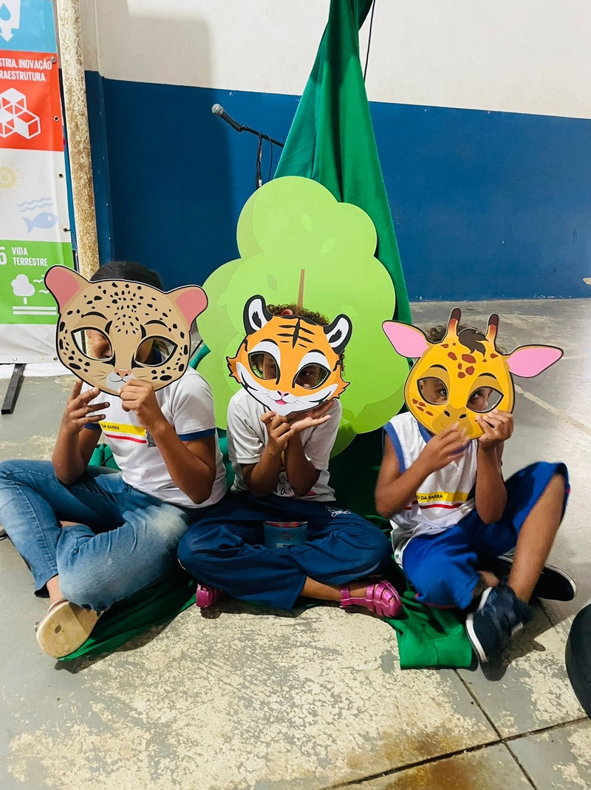
No final das oficinas de teatro, alunos apresentaram sua peça sobre os ODS para a comunidade escolar. O objetivo foi o desenvolvimento do trabalho em grupo, direção, logística, organização, produção de figurino e cenário, criação artística, criatividade e outras habilidades importantes na produção de uma peça teatral e conscientizar e engajar as pessoas sobre a importância dos ODS e inspirá-las a agir para promover mudanças positivas em suas próprias vidas e comunidades.
A palestra "Como Trabalhar os ODS através da Cultura" explorou maneiras criativas e eficazes de integrar os Objetivos de Desenvolvimento Sustentável no ambiente educacional. Voltada para professores e alunos de escolas públicas, a palestra ofereceu estratégias e inspirações para usar a cultura e as artes como ferramentas de ensino, ajudando a tornar os ODS mais acessíveis e relevantes para os estudantes e suas comunidades.
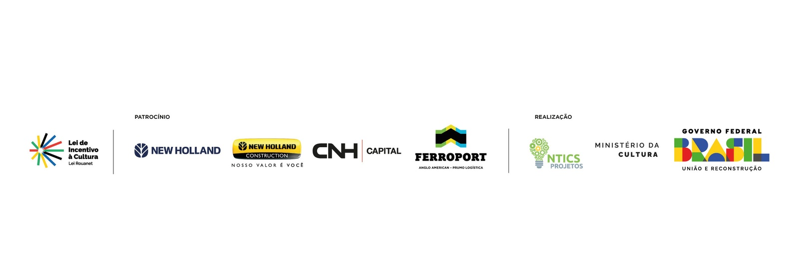
11 fotos do projeto
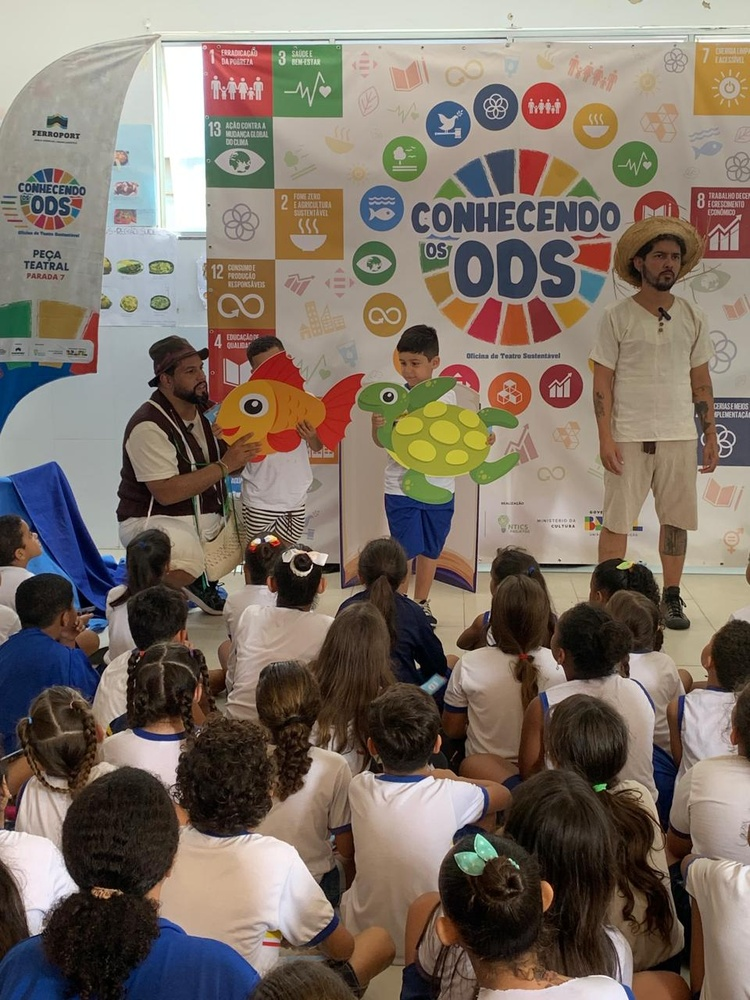
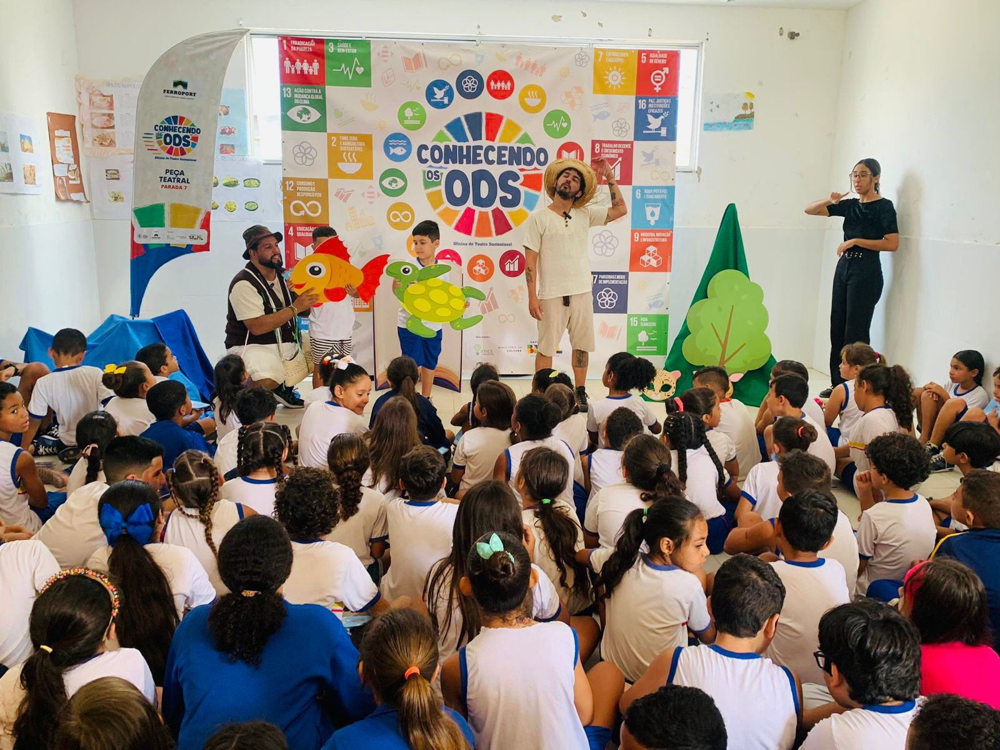
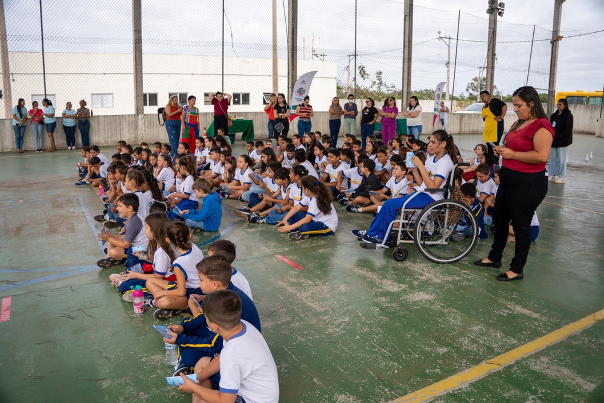
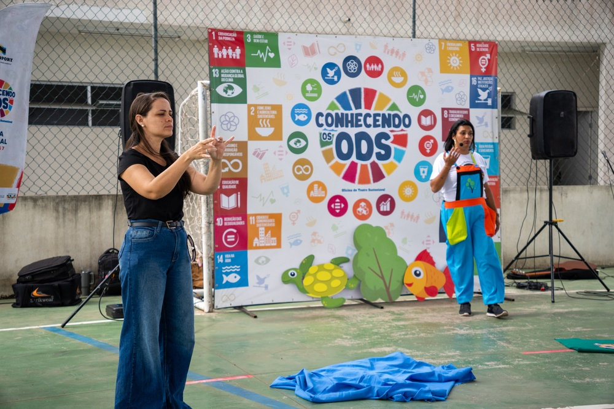
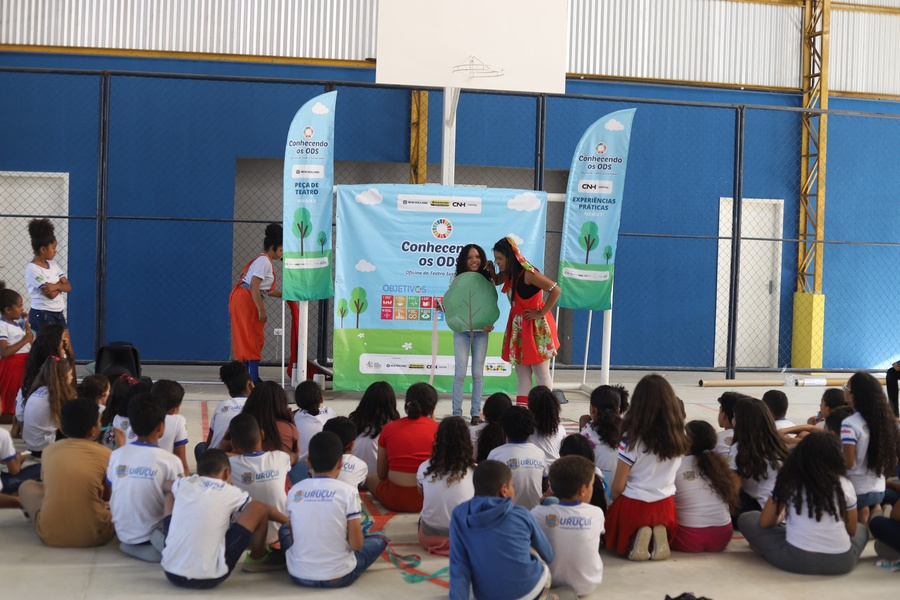
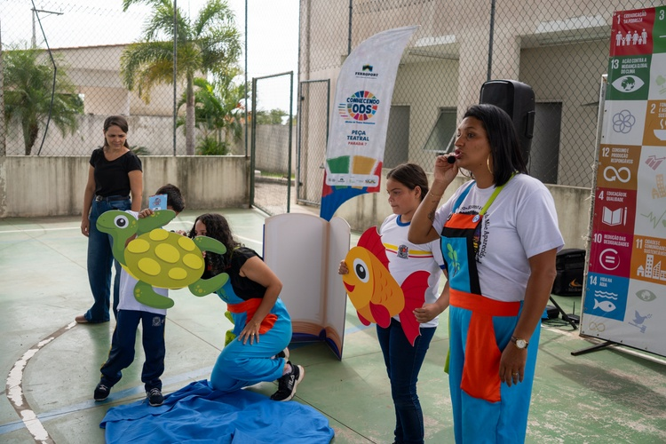
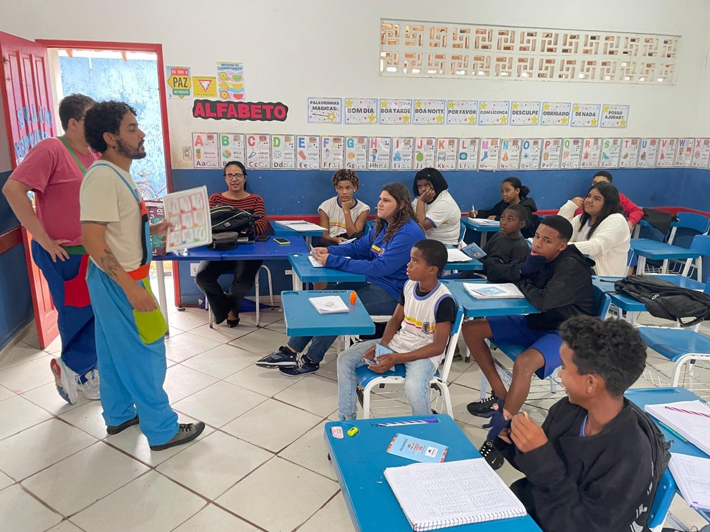
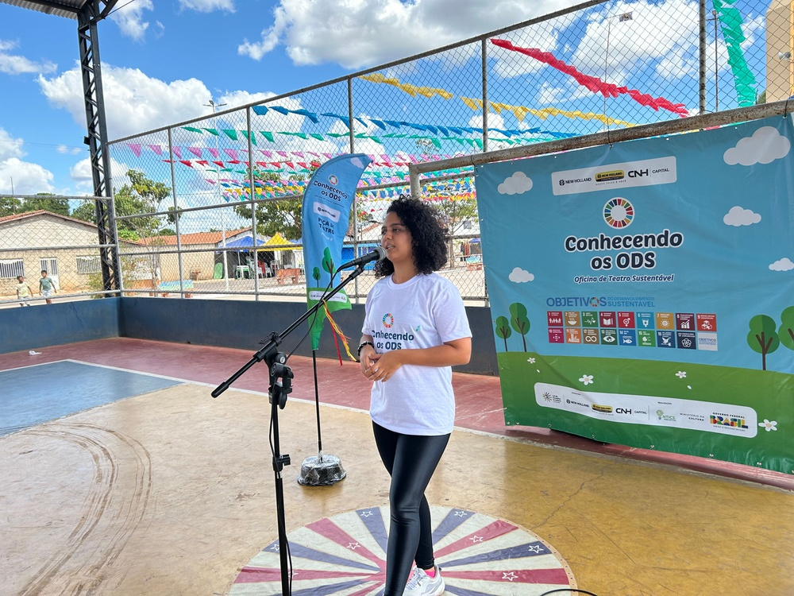
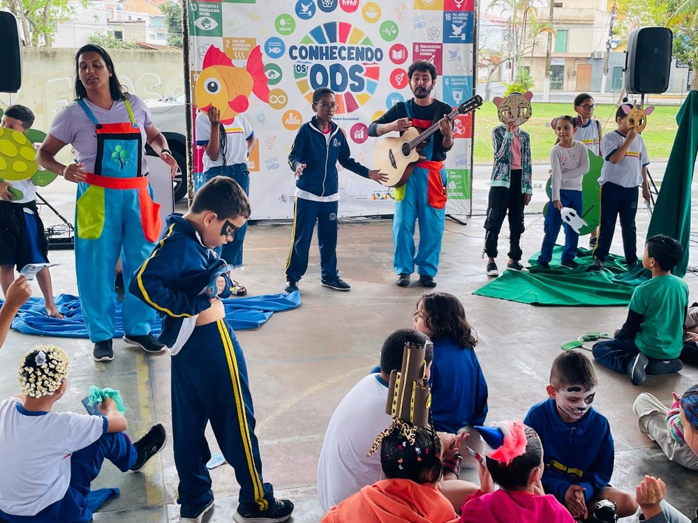
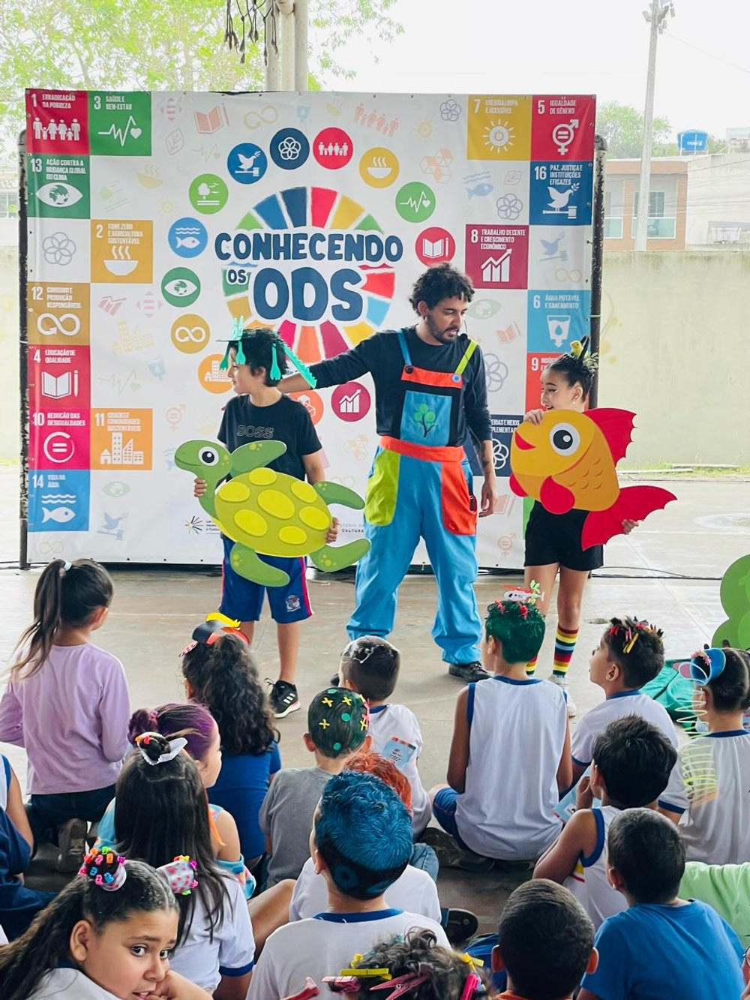
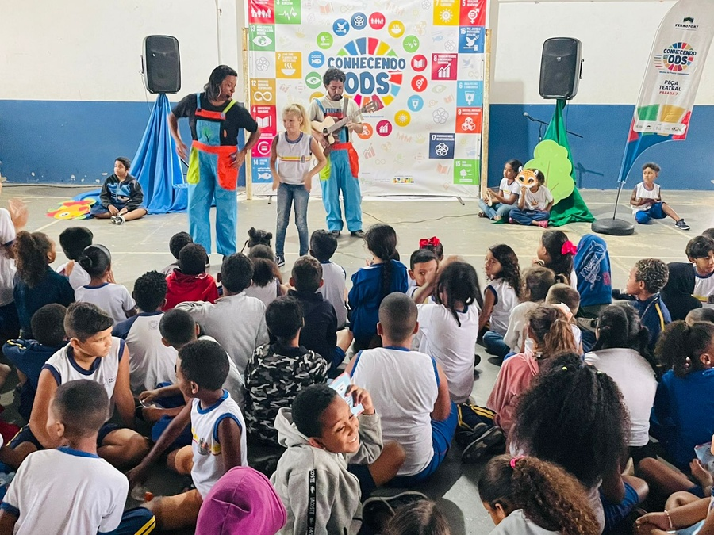